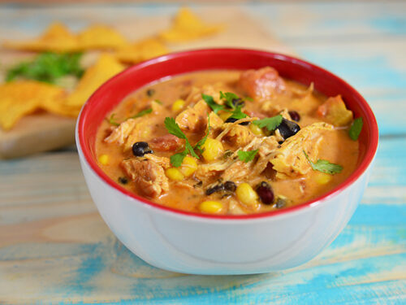

Chicken Enchilada Stew

Description
This recipe is for a super yummy, cheesy take on a
chicken enchilada stew. When I first tried to make
this recipe, it was supposed to be a casserole, but
that didn't work out too well. So we've settled on
more of a soup, but that doesn't change how tasty
it is! Grab your crockpot for this simple, yet
comforting meal.
Ingredients
- 1 rotisserie chicken, shredded
- 20 oz red enchilada sauce
- 1/2 packet taco seasoning
- 1 cup chicken stock
- 1 can black beans (drained)
- 1 can corn
- 8 oz shredded cheese of choice
- 8 oz sour cream
- 1 tbsp lime juice
- Hot sauce to taste
- Tortillas or tortilla chips (optional)
Steps
- Set crockpot on medium-high. Pour in enchilada sauce, taco
seasoning, chicken stock.
- Shred rotisserie chicken. Add to crock pot along with
black beans and corn. Add hot sauce to taste.
- Cover and cook for 2-3 hours.
- Add sour cream, lime juice, and shredded cheese. Mix
well.
- Serve topped with shredded cheese and sour cream.
Serve alone or with warm tortillas or tortilla chips.